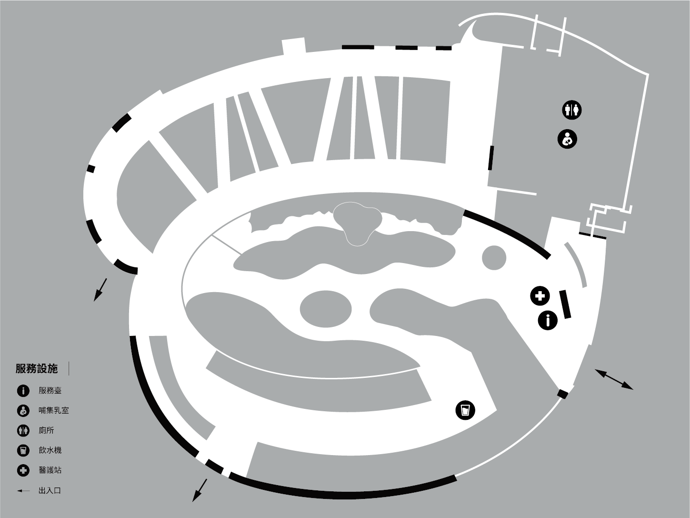

主展場地圖
臺北典藏植物園
01 主展場地圖

02 展覽資訊
展覽日期
2026.10.31–11.15
週一休館。
開放時間
週二至週日 09:00–17:00
10/31 開展當天響應白晝之夜，延長開放至次日 02:00
參觀地點
花博公園新生園區 臺北典藏植物園
臺北市中山區新庄里濱江街16號
03 交通資訊
01. 捷運
【圓山站】
- 步行至展區
- 轉乘紅50至【新生公園】
- 轉乘542至【吉林路底】
【大直站】
- 轉乘72、722至【新生公園（林安泰）】
【中山國小站】
- 步行至展區
02. 公車
【民族東路口】下車
109、203、277、279、280、280直、542、606、606通勤、612、685、敦化幹線
【新生公園】下車
紅50、685、市民小巴9
【新生公園（林安泰）】下車
72、222、286副、298、643、676、市民小巴9、松江新生幹線、復興幹線
【吉林路底】下車
542
03. WeMo 共享機車
活動期間於新生公園平面停車場（臺北市新生運動館外側），設立 WeMo 共享機車專屬租還區，民眾可透過共享機車抵達展區，或自由探索藝術入店，觀賞更多作品。
PERCEPTION
感知
這個視野並不理解所有事物。
IDLE